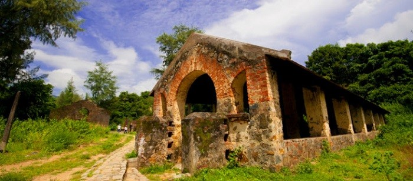

Ngày 1: TP.HCM - CÔN ĐẢO - VIẾNG MỘ CÔ SÁU
Sáng: Quý khách có mặt tại sân bay Tân Sơn Nhất, HDV OCEAN TRIP sẽ hỗ trợ làm thủ tục chuyến bay đi Côn Đảo.
Máy bay cất cánh – chuyến hành trình bắt đầu!
Hạ cánh tại sân bay Côn Đảo. Xe đón đoàn, đưa quý khách ghé qua những điểm nổi bật:
- Làng Cỏ Ống – nơi gắn với câu chuyện lịch sử sân bay Côn Đảo.

- Bãi Đầm Trầu – một trong những bãi biển hoang sơ và đẹp nhất nơi đây, nước xanh trong, cát trắng mịn.
Trưa: Thưởng thức đặc sản – Về khách sạn nghỉ ngơi
Dùng bữa trưa tại Cơm Niêu Hoa Sữa Côn Đảo – ấm cúng, đậm vị miền biển.
Xe đưa quý khách về khách sạn Orson Hotel & Resort Côn Đảo nhận phòng, nghỉ ngơi thư giãn.
Chiều: Hành trình về ký ức – Khám phá Côn Đảo lịch sử
Xe đưa đoàn tham quan loạt di tích gắn liền với quá khứ hào hùng của dân tộc:
- Dinh Chúa Đảo – nơi ở và làm việc của các đời Chúa Đảo xưa.
- Trại tù Phú Hải – nơi giam giữ những chiến sĩ yêu nước nổi tiếng như Phạm Hùng, Tôn Đức Thắng, Phạm Văn Đồng...
- Chuồng cọp kiểu Pháp – một mê cung giam giữ tù nhân khét tiếng với những hình thức tra tấn dã man.
- Chuồng cọp kiểu Mỹ (Trại Phú Bình) – nơi từng nhận tin chiến thắng Sài Gòn giải phóng đầu tiên.
- Khu biệt lập Chuồng Bò – từng là nơi giam giữ nữ tù nhân chính trị, mang trong mình những câu chuyện đầy đau thương và bất khuất.
Tối: Bữa cơm ấm lòng – Giờ linh thiêng viếng mộ cô Sáu
Xe đưa đoàn đi ăn cơm tối tại nhà hàng địa phương (không gian thoáng, món ăn hợp khẩu vị miền Nam – Bắc).
Cùng nhau đến viếng mộ chị Võ Thị Sáu tại Nghĩa trang Hàng Dương – nơi linh thiêng bậc nhất tại Côn Đảo.
Khuya: Kết thúc ngày đầu tiên thật nhiều cảm xúc
Xe đưa đoàn trở về khách sạn nghỉ ngơi, chuẩn bị cho hành trình ngày mai nhiều điều thú vị hơn nữa...
Ngày 2: KHÁM PHÁ VẺ ĐẸP THIÊN NHIÊN VÀ TÂM LINH CÔN ĐẢO
Sáng: Ăn sáng và hành hương ý nghĩa
Quý khách thưởng thức bữa sáng tại khách sạn trong không gian yên tĩnh, thanh mát đặc trưng của Côn Đảo. Xe đưa đoàn bắt đầu hành trình khám phá buổi sáng với những điểm đến gắn liền với tâm linh và lịch sử:
- Cầu tàu 914 – nơi ghi dấu hơn 900 người tù khổ sai đã hy sinh khi xây dựng cầu tàu này.
- Miếu Bà Phi Yến – thờ bà Phi Yến, vợ vua Nguyễn Ánh, một người phụ nữ trung hậu, tiết nghĩa của đất Côn Đảo.
- Chùa Núi Một (Vân Sơn Tự) – ngôi chùa nổi tiếng với cảnh quan tuyệt đẹp, từ đây có thể nhìn toàn cảnh thị trấn Côn Đảo và hồ An Hải.
Trưa: Nghỉ chân và thưởng thức đặc sản
Đoàn dùng bữa trưa tại Côn Sơn Quán, nơi nổi tiếng với những món ăn dân dã đậm hương vị biển (thực đơn đa dạng, phù hợp nhiều khẩu vị).
Chiều: Hành trình về với thiên nhiên hoang sơ
Xe đưa đoàn đến Miếu Cô Vân, nơi linh thiêng được người dân Côn Đảo thường xuyên đến viếng. Tại đây quý khách có thể:
- Tham quan Hòn Cau – hòn đảo nhỏ thanh bình, xanh mát, từng là nơi giam giữ cụ Phan Chu Trinh.
Ghé thăm Bãi Rùa tại Hòn Bảy Cạnh – nơi được mệnh danh là “bãi rùa đẻ trứng lớn nhất Côn Đảo”.
- Tắm biển thư giãn – Trở về khách sạn
Thư giãn tại Bãi biển An Hải, một trong những bãi biển đẹp và hoang sơ nhất Côn Đảo. Cát trắng, nước trong xanh, sóng êm – lý tưởng để:
. Tắm biển thư giãn – Trở về khách sạn
. Chụp hình check-in
. Đi dạo ngắm hoàng hôn trên biển
Tối: Tự do khám phá ẩm thực địa phương
Bữa tối tự túc – Quý khách có thể lựa chọn dùng bữa tại:
- Các quán hải sản ven biển nổi tiếng
- Cà phê view biển để thư giãn nhẹ nhàng
- Hoặc cùng bạn bè dạo phố đêm Côn Đảo, cảm nhận vẻ đẹp yên bình và sâu lắng của đảo ngọc về đêm.
NGÀY 3: TẠM BIỆT CÔN ĐẢO – TRỞ VỀ TP.HCM
Sáng: Tự do thư giãn – Tạm biệt đảo ngọc
Quý khách dùng bữa sáng tại khách sạn, tận hưởng những giây phút yên bình cuối cùng trên đảo.
Sau bữa sáng, quý khách có thể:
- Tự do tắm biển, dạo chơi nhẹ nhàng trên bờ cát trắng.
- Hoặc ghé thăm chợ Côn Đảo để mua quà lưu niệm, đặc sản địa phương tặng người thân, bạn bè (có thể mua mắm hàu, hạt bàng rang muối, mực một nắng...).
Trưa: Trả phòng – Ra sân bay
Xe đưa đoàn ra sân bay Côn Đảo, làm thủ tục cho chuyến bay trở về.
Bay về TP.HCM – Kết thúc hành trình
Máy bay khởi hành về TP.HCM.
Đoàn đáp xuống sân bay Tân Sơn Nhất/strong>, kết thúc chuyến đi.